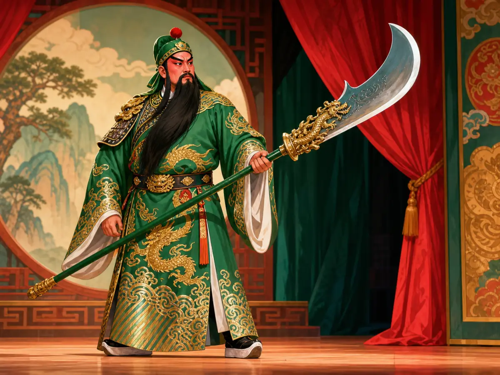
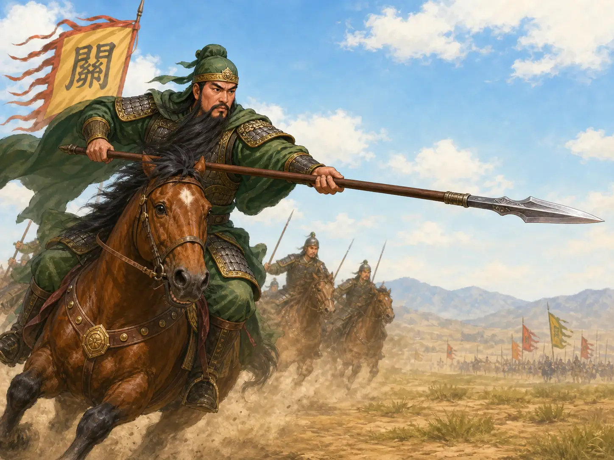
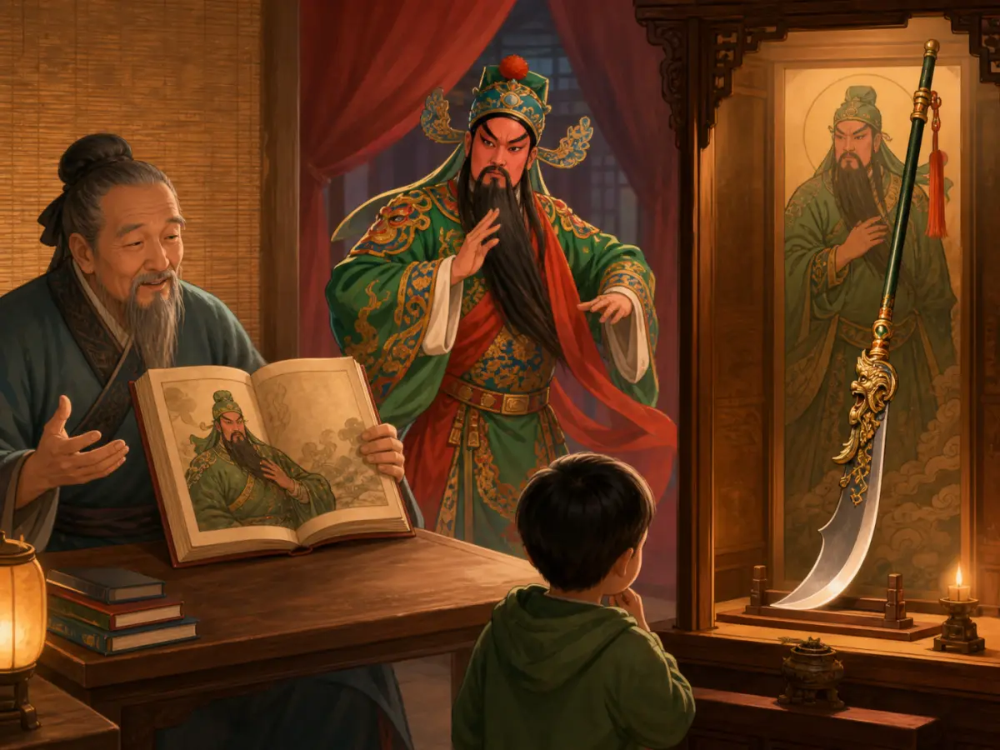
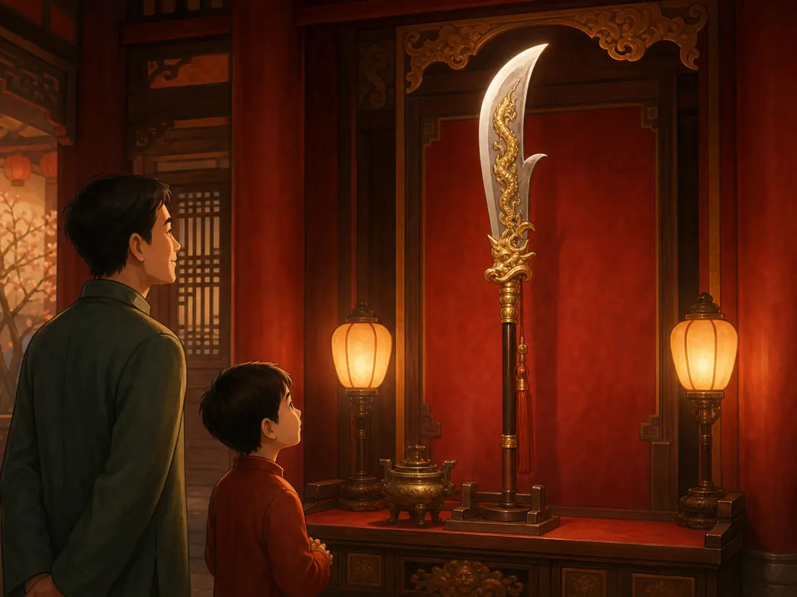

关羽真的用过青龙偃月刀吗？
Did Guan Yu Really Use the Green Dragon Crescent Blade?
Page 1

On the opera stage, Guan Yu's green robe, long beard, and enormous curved blade make him instantly recognizable.
长长的胡子，一身绿袍，再加上一把巨大的长柄弯刀——这几样东西放在一起，很多人一眼就能认出Guān Yǔ · 三国时期的将领，后来成为忠义的著名象征。。画里的关羽拿着它，戏台上的关羽也拿着它。时间久了，这把刀几乎和关羽本人一样有名。
《三国演义》给它起了一个威风凛凛的名字：Qīnglóng Yǎnyuèdāo · 《三国演义》和后世艺术中与关羽联系在一起的长柄大刀。。小说还说，这把刀重八十二斤。这个数字不用换算成今天的重量，光听就知道：这可不是一把小刀。看惯了这样的关羽，很难想象他手里没有青龙偃月刀。
可是，翻开一本更早的史书，奇怪的事情出现了。这把大刀不见了。
A long beard, a green robe, and an enormous curved blade. Put those three things together, and many people will recognize Guān Yǔ · 关羽 · A Three Kingdoms general later remembered as a powerful symbol of loyalty. at once. In paintings, opera, and stories, the blade is almost as famous as the hero carrying it.
In Romance of the Three Kingdoms, the weapon has a grand name: Qīnglóng Yǎnyuèdāo · 青龙偃月刀 · The great curved blade paired with Guan Yu in the novel and later art., the Green Dragon Crescent Blade. The novel even says it weighs eighty-two jīn. You do not need to turn that into pounds or kilograms to understand the point. This is supposed to be one enormous weapon. Once you have seen Guan Yu holding it, it is hard to imagine him without it.
But open a much older book, and something strange happens. The famous blade disappears.
Page 2

Guan Yu charges on horseback carrying a spear, although the early history itself does not say what weapon he held.
早期史书里记过关羽的一场战斗。他骑着马冲进敌军之中，打败了对方的主将。这本来是一个十分精彩的场面，可是史书从头到尾都没有提到“青龙偃月刀”。没有威风的刀名，也没有八十二斤的大刀。写完这一仗，史书就继续讲别的事情去了。
那么，今天人人都认识的这把大刀，是从哪里来的呢？要找到它，我们得把书页一直往后翻——翻过好几百年。
到了Sòng cháo · 中国历史上从960年延续到1279年的朝代。，一本军事书里已经出现了一种叫作偃月刀的长柄兵器。它有宽大的弯曲刀身，样子非常醒目。
One of the earliest histories of Guan Yu tells of a battle in which he charged on horseback into a crowd of enemy soldiers and defeated their commander. It is a dramatic moment—but the book never says that he was carrying the Green Dragon Crescent Blade. No grand weapon name. No eighty-two jīn blade. The story of the battle simply moves on.
So where did that unforgettable curved blade come from? To find it, we have to turn the pages forward—many centuries forward.
By the Sòng cháo · 宋朝 · The Chinese dynasty that lasted from 960 to 1279., a Chinese military book showed a large curved weapon on a long handle called a yǎnyuèdāo. Its broad blade swept outward in a shape that was easy to recognize.
Page 3

Novels, paintings, and opera repeated the image of Guan Yu with his blade until the weapon became his signature.
后来，《三国演义》出现了。小说里的关羽当然不能随随便便拿一件普通兵器。他拿的是青龙偃月刀。名字好记，样子好认，就连那惊人的“八十二斤”也让人忘不了。
这样的刀放在关羽手里，好像正合适。故事里的关羽是一位威风凛凛的大将，他的兵器当然也要一样威风。这个画面就这样留了下来。
画家画关羽，把大刀放在他身边；戏台上演关羽，演员也拿着长柄大刀。一次又一次，人们看到的总是同一个组合：关羽和他的青龙偃月刀。时间久了，这把刀简直成了关羽的“名片”。
Then came Romance of the Three Kingdoms.
In the novel, Guan Yu does not get an ordinary weapon. He gets the Green Dragon Crescent Blade. The name is memorable. The shape is memorable. Even its enormous weight is memorable. And it fits the Guan Yu of the story perfectly: a mighty warrior carrying a weapon that looks just as mighty as he does. The image stuck.
Artists painted the great blade beside him. Actors carried it when they played Guan Yu onstage. Again and again, people saw the same pair: Guan Yu and his long-handled curved blade. After a while, the weapon became almost like a name tag.
Page 4

Even without Guan Yu beside it, the long-handled curved blade can immediately call its famous owner to mind.
想象一下，戏台上走出一位武将。你还没有看清他的脸，就先看见了那长长的刀柄和巨大的弯刀。你已经知道是谁来了。
这也许就是青龙偃月刀最有意思的地方。早期史书里的关羽身边没有它，可是经过一代又一代人的讲述、绘画和表演，它最后成了大家最熟悉的关羽形象之一。
故事有时候就是这样。一个细节被讲了一次，又讲一次；被画了一次，又画一次。几百年过去，它好像一直都在那里。
今天，如果把关羽手里的大刀拿走，反而让人觉得少了点什么。把青龙偃月刀放回去——大家一眼就知道：关羽来了。
Imagine an actor walking onto a stage. Before you have even looked closely at his face, you notice the long handle and the huge curved blade. You already know who has arrived.
That is what makes the Green Dragon Crescent Blade so interesting. It is missing from the early history of Guan Yu, yet it became one of the easiest ways to recognize him.
Stories can do that. A detail is told again, painted again, and performed again. Hundreds of years pass, and the picture becomes so familiar that it feels as if it has always been there.
Today, take away Guan Yu's great blade and something seems to be missing. Put it back in his hands, and everyone knows exactly who he is.